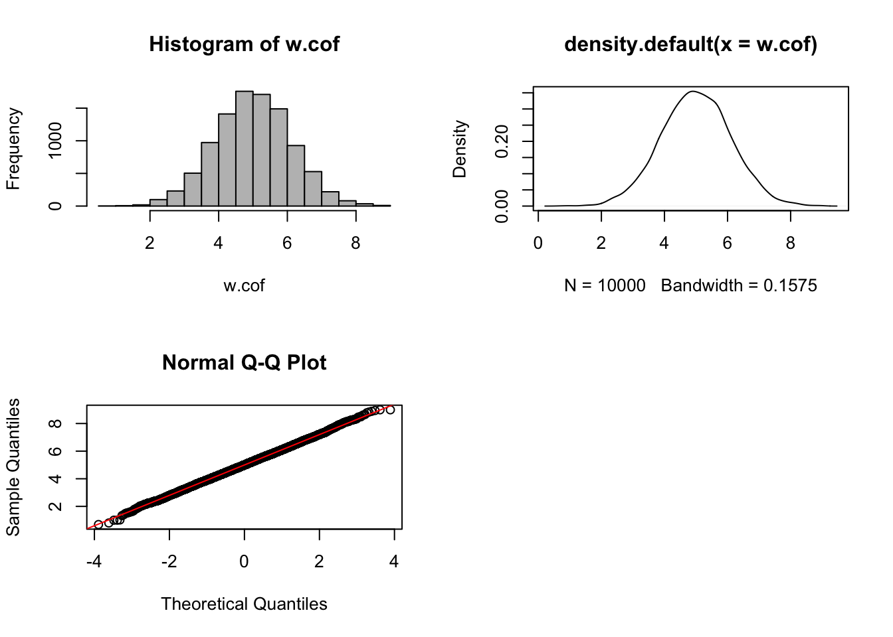
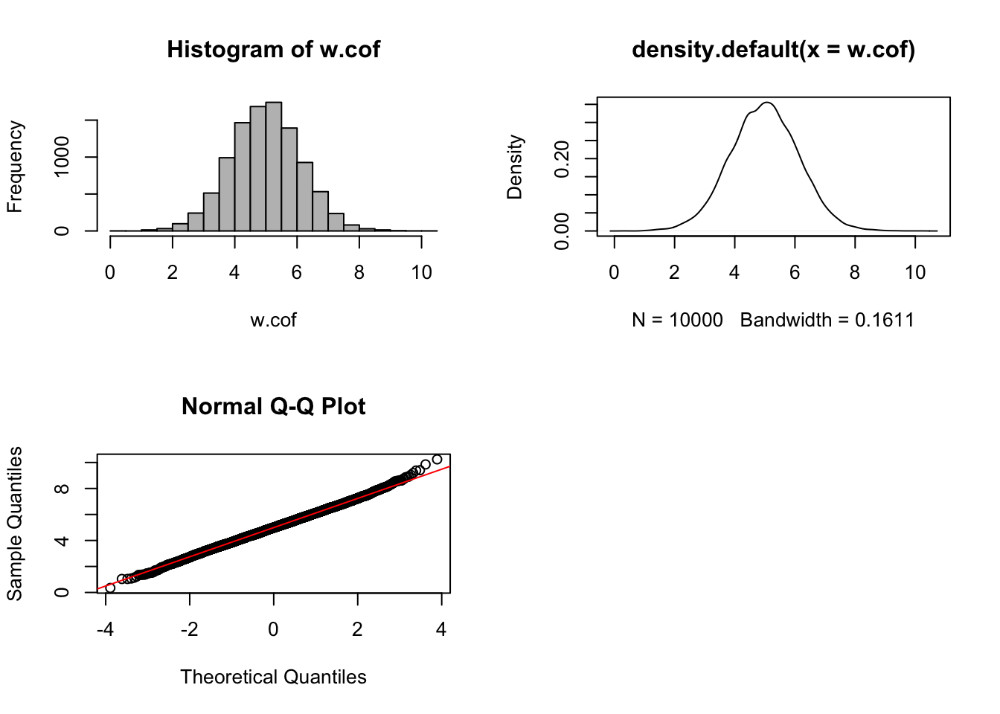
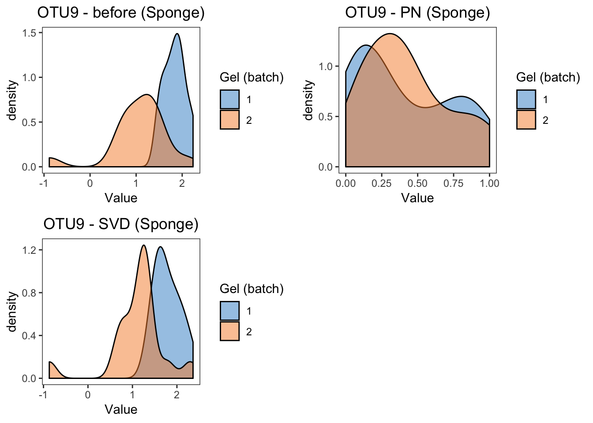
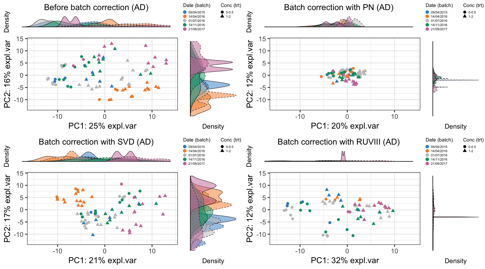
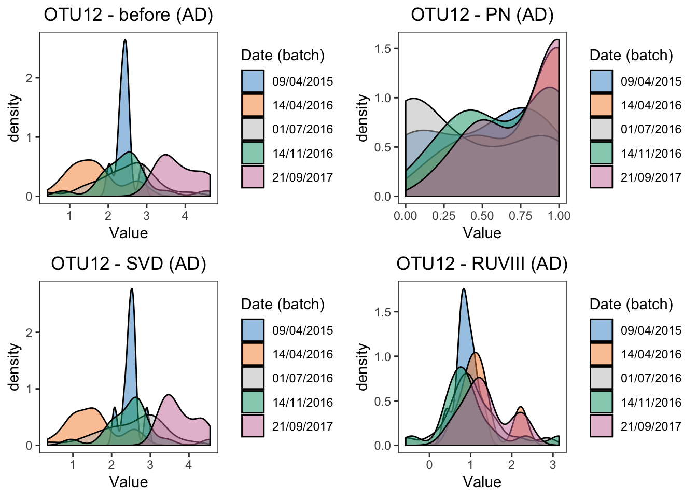
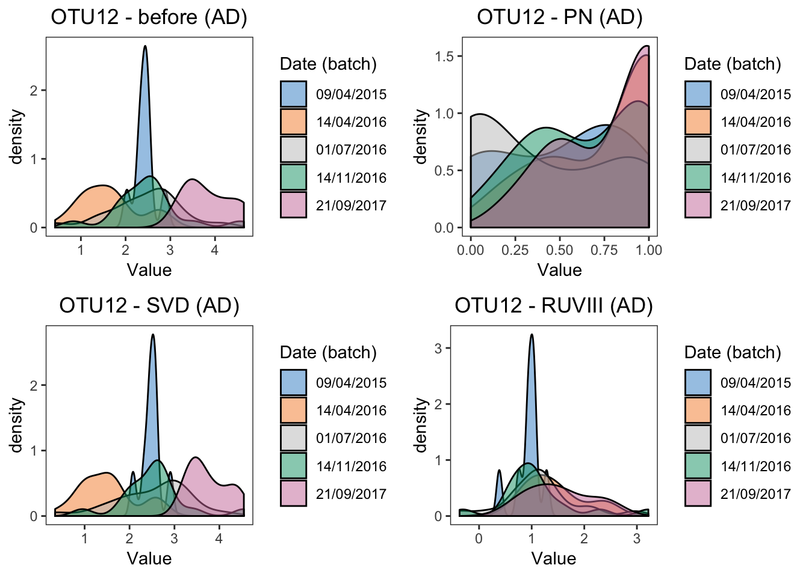
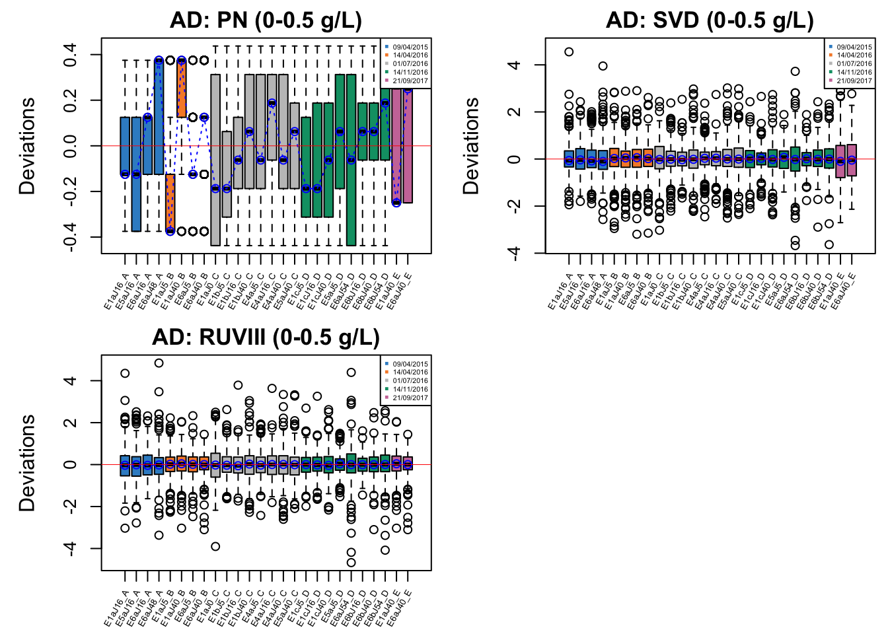
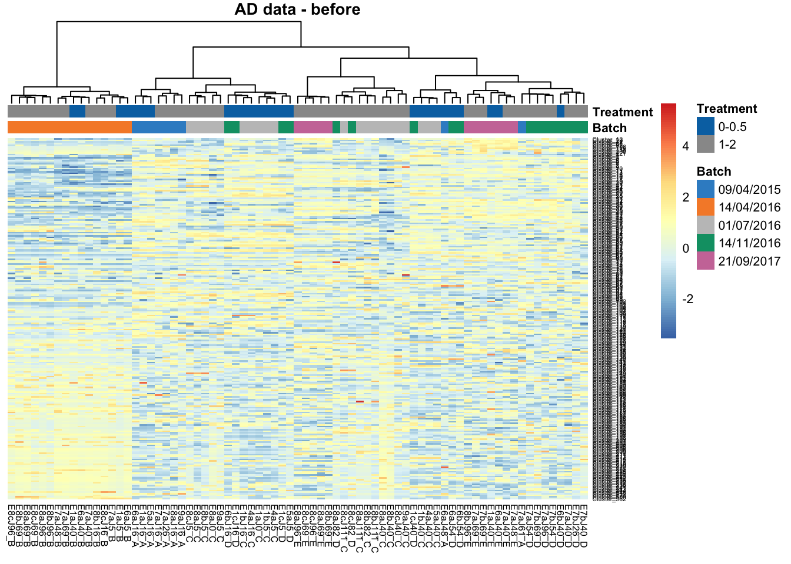
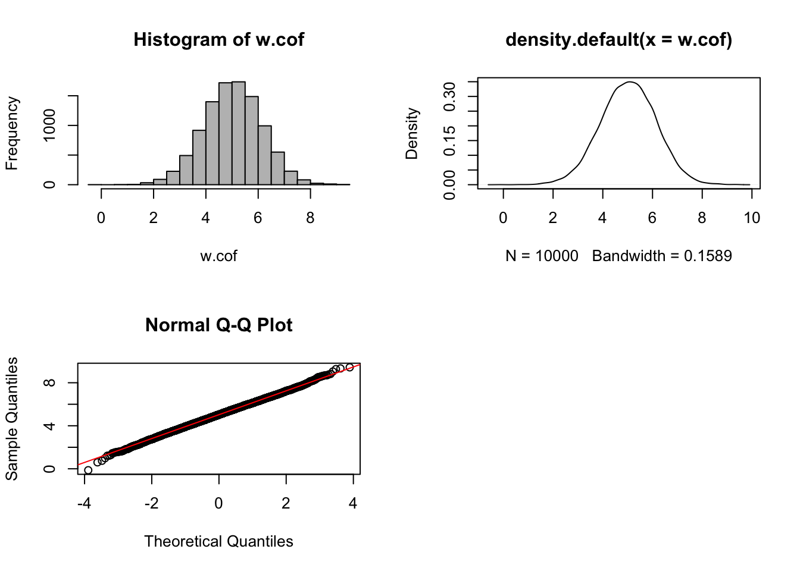

Chapter 4 Methods evaluation
4.1 Diagnostic plots
4.1.1 Principal component analysis (PCA) with density plot per component
We apply PCA on both sponge and AD data before and after correction with different methods.
# sponge data
sponge.pca.before = pca(sponge.tss.clr, ncomp = 3)
sponge.pca.bmc = pca(sponge.bmc, ncomp = 3)
sponge.pca.combat = pca(sponge.combat, ncomp = 3)
sponge.pca.limma = pca(sponge.limma, ncomp = 3)
sponge.pca.percentile = pca(sponge.percentile, ncomp = 3)
sponge.pca.svd = pca(sponge.svd, ncomp = 3)
# ad data
ad.pca.before = pca(ad.tss.clr, ncomp = 3)
ad.pca.bmc = pca(ad.bmc, ncomp = 3)
ad.pca.combat = pca(ad.combat, ncomp = 3)
ad.pca.limma = pca(ad.limma, ncomp = 3)
ad.pca.percentile = pca(ad.percentile, ncomp = 3)
ad.pca.svd = pca(ad.svd, ncomp = 3)
ad.pca.ruv = pca(ad.ruvIII, ncomp = 3)We then plot these PCA sample plots with denisty plots per PC.
grid.arrange(sponge.pca.plot.before, sponge.pca.plot.bmc, sponge.pca.plot.combat,sponge.pca.plot.limma,ncol=2)
grid.arrange(sponge.pca.plot.before, sponge.pca.plot.percentile,sponge.pca.plot.svd,ncol=2)
SVD performed the worse, compared to BMC, removeBatchEffect and percentile normalisation, as it did not remove batch effects but removed tissue variation instead.
grid.arrange(ad.pca.plot.before, ad.pca.plot.bmc, ad.pca.plot.combat,ad.pca.plot.limma,ncol=2)
grid.arrange(ad.pca.plot.before, ad.pca.plot.percentile,ad.pca.plot.svd,ad.pca.plot.ruv,ncol=2)
BMC, removeBatchEffect, percentile normalisation and RUVIII removed the batch effects, and maintained the treatment effects. SVD did not removed the batch effect but decreased the treatment effects.
4.1.2 Density plot and box plot
###############
## sponge data
sponge.before.df = data.frame(value = sponge.tss.clr[,9], batch = sponge.batch)
sponge.boxplot.before <- box_plot_fun(data = sponge.before.df,x=sponge.before.df$batch,
y=sponge.before.df$value,title = 'OTU9 - before (Sponge)',
batch.legend.title = 'Gel (batch)')
sponge.bmc.df = data.frame(value = sponge.bmc[,9], batch = sponge.batch)
sponge.boxplot.bmc <-box_plot_fun(data = sponge.bmc.df,x=sponge.bmc.df$batch,
y=sponge.bmc.df$value,title = 'OTU9 - BMC (Sponge)',
batch.legend.title = 'Gel (batch)')
sponge.combat.df = data.frame(value = sponge.combat[,9], batch = sponge.batch)
sponge.boxplot.combat <-box_plot_fun(data = sponge.combat.df,x=sponge.combat.df$batch,
y=sponge.combat.df$value,title = 'OTU9 - ComBat (Sponge)',
batch.legend.title = 'Gel (batch)')
sponge.limma.df = data.frame(value = sponge.limma[,9], batch = sponge.batch)
sponge.boxplot.limma <-box_plot_fun(data = sponge.limma.df,x=sponge.limma.df$batch,
y=sponge.limma.df$value,title = 'OTU9 - rBE(Sponge)',
batch.legend.title = 'Gel (batch)')
sponge.percentile.df = data.frame(value = sponge.percentile[,9], batch = sponge.batch)
sponge.boxplot.percentile <-box_plot_fun(data = sponge.percentile.df,x=sponge.percentile.df$batch,
y=sponge.percentile.df$value,title = 'OTU9 - PN (Sponge)',
batch.legend.title = 'Gel (batch)')
sponge.svd.df = data.frame(value = sponge.svd[,9], batch = sponge.batch)
sponge.boxplot.svd <-box_plot_fun(data = sponge.svd.df,x=sponge.svd.df$batch,
y=sponge.svd.df$value,title = 'OTU9 - SVD (Sponge)',
batch.legend.title = 'Gel (batch)')grid.arrange(sponge.boxplot.before, sponge.boxplot.bmc, sponge.boxplot.combat, sponge.boxplot.limma,ncol=2)
grid.arrange(sponge.boxplot.before, sponge.boxplot.percentile,sponge.boxplot.svd,ncol=2)
## density plot
# before
sponge.dens.before <- ggplot(sponge.before.df, aes(x = value, fill = batch)) + geom_density(alpha = 0.5) + scale_fill_manual(values=color.mixo(1:10)) + labs(title = 'OTU9 - before (Sponge)',x='Value',fill = 'Gel (batch)') + theme_bw() + theme(plot.title = element_text(hjust=0.5), panel.grid = element_blank())
# BMC
sponge.dens.bmc <- ggplot(sponge.bmc.df, aes(x = value, fill = batch)) + geom_density(alpha = 0.5) + scale_fill_manual(values=color.mixo(1:10)) + labs(title = 'OTU9 - BMC (Sponge)',x='Value',fill = 'Gel (batch)') + theme_bw() + theme(plot.title = element_text(hjust=0.5), panel.grid = element_blank())
# ComBat
sponge.dens.combat <- ggplot(sponge.combat.df, aes(x = value, fill = batch)) + geom_density(alpha = 0.5) + scale_fill_manual(values=color.mixo(1:10)) + labs(title = 'OTU9 - ComBat (Sponge)',x='Value',fill = 'Gel (batch)') + theme_bw() + theme(plot.title = element_text(hjust=0.5), panel.grid = element_blank())
# removeBatchEffect
sponge.dens.limma <- ggplot(sponge.limma.df, aes(x = value, fill = batch)) + geom_density(alpha = 0.5) + scale_fill_manual(values=color.mixo(1:10)) + labs(title = 'OTU9 - rBE (Sponge)',x='Value',fill = 'Gel (batch)') + theme_bw() + theme(plot.title = element_text(hjust=0.5), panel.grid = element_blank())
# percentile normal
sponge.dens.percentile <- ggplot(sponge.percentile.df, aes(x = value, fill = batch)) + geom_density(alpha = 0.5) + scale_fill_manual(values=color.mixo(1:10)) + labs(title = 'OTU9 - PN (Sponge)',x='Value',fill = 'Gel (batch)') + theme_bw() + theme(plot.title = element_text(hjust=0.5), panel.grid = element_blank())
# SVD
sponge.dens.svd <- ggplot(sponge.svd.df, aes(x = value, fill = batch)) + geom_density(alpha = 0.5) + scale_fill_manual(values=color.mixo(1:10)) + labs(title = 'OTU9 - SVD (Sponge)',x='Value',fill = 'Gel (batch)') + theme_bw() + theme(plot.title = element_text(hjust=0.5), panel.grid = element_blank())grid.arrange(sponge.dens.before, sponge.dens.bmc, sponge.dens.combat,sponge.dens.limma,ncol=2)
grid.arrange(sponge.dens.before, sponge.dens.percentile, sponge.dens.svd,ncol=2)
######### p-values
sponge.lm.before = lm(sponge.tss.clr[,9]~ sponge.trt + sponge.batch)
summary(sponge.lm.before)##
## Call:
## lm(formula = sponge.tss.clr[, 9] ~ sponge.trt + sponge.batch)
##
## Residuals:
## Min 1Q Median 3Q Max
## -1.87967 -0.24705 0.04588 0.24492 1.00757
##
## Coefficients:
## Estimate Std. Error t value Pr(>|t|)
## (Intercept) 1.7849 0.1497 11.922 1.06e-12 ***
## sponge.trtE 0.1065 0.1729 0.616 0.543
## sponge.batch2 -0.7910 0.1729 -4.575 8.24e-05 ***
## ---
## Signif. codes: 0 '***' 0.001 '**' 0.01 '*' 0.05 '.' 0.1 ' ' 1
##
## Residual standard error: 0.489 on 29 degrees of freedom
## Multiple R-squared: 0.4236, Adjusted R-squared: 0.3839
## F-statistic: 10.66 on 2 and 29 DF, p-value: 0.0003391sponge.lm.bmc = lm(sponge.bmc[,9]~ sponge.trt + sponge.batch)
summary(sponge.lm.bmc)##
## Call:
## lm(formula = sponge.bmc[, 9] ~ sponge.trt + sponge.batch)
##
## Residuals:
## Min 1Q Median 3Q Max
## -1.87967 -0.24705 0.04588 0.24492 1.00757
##
## Coefficients:
## Estimate Std. Error t value Pr(>|t|)
## (Intercept) -5.323e-02 1.497e-01 -0.356 0.725
## sponge.trtE 1.065e-01 1.729e-01 0.616 0.543
## sponge.batch2 3.925e-17 1.729e-01 0.000 1.000
##
## Residual standard error: 0.489 on 29 degrees of freedom
## Multiple R-squared: 0.01291, Adjusted R-squared: -0.05517
## F-statistic: 0.1896 on 2 and 29 DF, p-value: 0.8283sponge.lm.combat = lm(sponge.combat[,9]~ sponge.trt + sponge.batch)
summary(sponge.lm.combat)##
## Call:
## lm(formula = sponge.combat[, 9] ~ sponge.trt + sponge.batch)
##
## Residuals:
## Min 1Q Median 3Q Max
## -1.64583 -0.22414 0.05092 0.24065 0.88585
##
## Coefficients:
## Estimate Std. Error t value Pr(>|t|)
## (Intercept) 1.46291 0.13491 10.844 1.02e-11 ***
## sponge.trtE 0.09081 0.15578 0.583 0.564
## sponge.batch2 -0.16201 0.15578 -1.040 0.307
## ---
## Signif. codes: 0 '***' 0.001 '**' 0.01 '*' 0.05 '.' 0.1 ' ' 1
##
## Residual standard error: 0.4406 on 29 degrees of freedom
## Multiple R-squared: 0.04672, Adjusted R-squared: -0.01902
## F-statistic: 0.7107 on 2 and 29 DF, p-value: 0.4996sponge.lm.limma = lm(sponge.limma[,9]~ sponge.trt + sponge.batch)
summary(sponge.lm.limma)##
## Call:
## lm(formula = sponge.limma[, 9] ~ sponge.trt + sponge.batch)
##
## Residuals:
## Min 1Q Median 3Q Max
## -1.87967 -0.24705 0.04588 0.24492 1.00757
##
## Coefficients:
## Estimate Std. Error t value Pr(>|t|)
## (Intercept) 1.389e+00 1.497e-01 9.280 3.49e-10 ***
## sponge.trtE 1.065e-01 1.729e-01 0.616 0.543
## sponge.batch2 2.355e-16 1.729e-01 0.000 1.000
## ---
## Signif. codes: 0 '***' 0.001 '**' 0.01 '*' 0.05 '.' 0.1 ' ' 1
##
## Residual standard error: 0.489 on 29 degrees of freedom
## Multiple R-squared: 0.01291, Adjusted R-squared: -0.05517
## F-statistic: 0.1896 on 2 and 29 DF, p-value: 0.8283sponge.lm.percentile = lm(sponge.percentile[,9]~ sponge.trt + sponge.batch)
summary(sponge.lm.percentile)##
## Call:
## lm(formula = sponge.percentile[, 9] ~ sponge.trt + sponge.batch)
##
## Residuals:
## Min 1Q Median 3Q Max
## -0.4531 -0.2070 -0.0625 0.1797 0.6562
##
## Coefficients:
## Estimate Std. Error t value Pr(>|t|)
## (Intercept) 0.48438 0.09515 5.090 1.97e-05 ***
## sponge.trtE -0.17187 0.10987 -1.564 0.129
## sponge.batch2 0.03125 0.10987 0.284 0.778
## ---
## Signif. codes: 0 '***' 0.001 '**' 0.01 '*' 0.05 '.' 0.1 ' ' 1
##
## Residual standard error: 0.3108 on 29 degrees of freedom
## Multiple R-squared: 0.08018, Adjusted R-squared: 0.01674
## F-statistic: 1.264 on 2 and 29 DF, p-value: 0.2976sponge.lm.svd = lm(sponge.svd[,9]~ sponge.trt + sponge.batch)
summary(sponge.lm.svd)##
## Call:
## lm(formula = sponge.svd[, 9] ~ sponge.trt + sponge.batch)
##
## Residuals:
## Min 1Q Median 3Q Max
## -1.82982 -0.27539 0.05228 0.28204 1.05932
##
## Coefficients:
## Estimate Std. Error t value Pr(>|t|)
## (Intercept) 1.6433 0.1526 10.766 1.21e-11 ***
## sponge.trtE 0.2817 0.1763 1.598 0.12085
## sponge.batch2 -0.6831 0.1763 -3.875 0.00056 ***
## ---
## Signif. codes: 0 '***' 0.001 '**' 0.01 '*' 0.05 '.' 0.1 ' ' 1
##
## Residual standard error: 0.4985 on 29 degrees of freedom
## Multiple R-squared: 0.3773, Adjusted R-squared: 0.3344
## F-statistic: 8.787 on 2 and 29 DF, p-value: 0.001039##################
# ad data
# boxplot
ad.before.df = data.frame(value = ad.tss.clr[,1], batch = ad.batch)
ad.boxplot.before <- box_plot_fun(data = ad.before.df,x=ad.before.df$batch,
y=ad.before.df$value,title = 'OTU12 - before (AD)',
batch.legend.title = 'Date (batch)',
x.angle = 45, x.hjust = 1)
ad.bmc.df = data.frame(value = ad.bmc[,1], batch = ad.batch)
ad.boxplot.bmc <- box_plot_fun(data = ad.bmc.df,x=ad.bmc.df$batch,
y=ad.bmc.df$value,title = 'OTU12 - BMC (AD)',
batch.legend.title = 'Date (batch)',
x.angle = 45, x.hjust = 1)
ad.combat.df = data.frame(value = ad.combat[,1], batch = ad.batch)
ad.boxplot.combat <- box_plot_fun(data = ad.combat.df,x=ad.combat.df$batch,
y=ad.combat.df$value,title = 'OTU12 - ComBat (AD)',
batch.legend.title = 'Date (batch)',
x.angle = 45, x.hjust = 1)
ad.limma.df = data.frame(value = ad.limma[,1], batch = ad.batch)
ad.boxplot.limma <- box_plot_fun(data = ad.limma.df,x=ad.limma.df$batch,
y=ad.limma.df$value,title = 'OTU12 - rBE (AD)',
batch.legend.title = 'Date (batch)',
x.angle = 45, x.hjust = 1)
ad.percentile.df = data.frame(value = ad.percentile[,1], batch = ad.batch)
ad.boxplot.percentile <- box_plot_fun(data = ad.percentile.df,x=ad.percentile.df$batch,
y=ad.percentile.df$value,title = 'OTU12 - PN (AD)',
batch.legend.title = 'Date (batch)',
x.angle = 45, x.hjust = 1)
ad.svd.df = data.frame(value = ad.svd[,1], batch = ad.batch)
ad.boxplot.svd <- box_plot_fun(data = ad.svd.df,x=ad.svd.df$batch,
y=ad.svd.df$value,title = 'OTU12 - SVD (AD)',
batch.legend.title = 'Date (batch)',
x.angle = 45, x.hjust = 1)
ad.ruv.df = data.frame(value = ad.ruvIII[,1], batch = ad.batch)
ad.boxplot.ruv <- box_plot_fun(data = ad.ruv.df,x=ad.ruv.df$batch,
y=ad.ruv.df$value,title = 'OTU12 - RUVIII (AD)',
batch.legend.title = 'Date (batch)',
x.angle = 45, x.hjust = 1)grid.arrange(ad.boxplot.before, ad.boxplot.bmc, ad.boxplot.combat, ad.boxplot.limma,ncol=2)
grid.arrange(ad.boxplot.before, ad.boxplot.percentile,ad.boxplot.svd,ad.boxplot.ruv,ncol=2)
# density plot
# before
ad.dens.before = ggplot(ad.before.df, aes(x = value, fill = batch)) + geom_density(alpha = 0.5) + scale_fill_manual(values=color.mixo(1:10)) + labs(title = 'OTU12 - before (AD)',x = 'Value',fill = 'Date (batch)') + theme_bw() + theme(plot.title = element_text(hjust=0.5), panel.grid = element_blank())
# BMC
ad.dens.bmc = ggplot(ad.bmc.df, aes(x = value, fill = batch)) + geom_density(alpha = 0.5) + scale_fill_manual(values=color.mixo(1:10)) + labs(title = 'OTU12 - BMC (AD)',x = 'Value',fill = 'Date (batch)') + theme_bw() + theme(plot.title = element_text(hjust=0.5), panel.grid = element_blank())
# ComBat
ad.dens.combat = ggplot(ad.combat.df, aes(x = value, fill = batch)) + geom_density(alpha = 0.5) + scale_fill_manual(values=color.mixo(1:10)) + labs(title = 'OTU12 - ComBat (AD)',x = 'Value',fill = 'Date (batch)') + theme_bw() + theme(plot.title = element_text(hjust=0.5), panel.grid = element_blank())
# removeBatchEffect
ad.dens.limma = ggplot(ad.limma.df, aes(x = value, fill = batch)) + geom_density(alpha = 0.5) + scale_fill_manual(values=color.mixo(1:10)) + labs(title = 'OTU12 - rBE (AD)',x = 'Value',fill = 'Date (batch)') + theme_bw() + theme(plot.title = element_text(hjust=0.5), panel.grid = element_blank())
# percentile norm
ad.dens.percentile = ggplot(ad.percentile.df, aes(x = value, fill = batch)) + geom_density(alpha = 0.5) + scale_fill_manual(values=color.mixo(1:10)) + labs(title = 'OTU12 - PN (AD)',x = 'Value',fill = 'Date (batch)') + theme_bw() + theme(plot.title = element_text(hjust=0.5), panel.grid = element_blank())
# SVD
ad.dens.svd = ggplot(ad.svd.df, aes(x = value, fill = batch)) + geom_density(alpha = 0.5) + scale_fill_manual(values=color.mixo(1:10)) + labs(title = 'OTU12 - SVD (AD)',x = 'Value',fill = 'Date (batch)') + theme_bw() + theme(plot.title = element_text(hjust=0.5), panel.grid = element_blank())
# RUVIII
ad.dens.ruv = ggplot(ad.ruv.df, aes(x = value, fill = batch)) + geom_density(alpha = 0.5) + scale_fill_manual(values=color.mixo(1:10)) + labs(title = 'OTU12 - RUVIII (AD)',x = 'Value',fill = 'Date (batch)') + theme_bw() + theme(plot.title = element_text(hjust=0.5), panel.grid = element_blank())grid.arrange(ad.dens.before, ad.dens.bmc, ad.dens.combat,ad.dens.limma,ncol=2)
grid.arrange(ad.dens.before, ad.dens.percentile, ad.dens.svd,ad.dens.ruv, ncol=2)
#p-values
ad.lm.before = lm(ad.tss.clr[,1]~ ad.trt + ad.batch)
anova(ad.lm.before)## Analysis of Variance Table
##
## Response: ad.tss.clr[, 1]
## Df Sum Sq Mean Sq F value Pr(>F)
## ad.trt 1 1.460 1.4605 3.1001 0.08272 .
## ad.batch 4 32.889 8.2222 17.4532 6.168e-10 ***
## Residuals 69 32.506 0.4711
## ---
## Signif. codes: 0 '***' 0.001 '**' 0.01 '*' 0.05 '.' 0.1 ' ' 1#summary(ad.lm.before)
ad.lm.bmc = lm(ad.bmc[,1]~ ad.trt + ad.batch)
anova(ad.lm.bmc)## Analysis of Variance Table
##
## Response: ad.bmc[, 1]
## Df Sum Sq Mean Sq F value Pr(>F)
## ad.trt 1 0.631 0.63084 1.3391 0.2512
## ad.batch 4 0.036 0.00893 0.0190 0.9993
## Residuals 69 32.506 0.47110#summary(ad.lm.bmc)
ad.lm.combat = lm(ad.combat[,1]~ ad.trt + ad.batch)
anova(ad.lm.combat)## Analysis of Variance Table
##
## Response: ad.combat[, 1]
## Df Sum Sq Mean Sq F value Pr(>F)
## ad.trt 1 0.6695 0.66954 1.6980 0.1969
## ad.batch 4 0.2373 0.05932 0.1504 0.9622
## Residuals 69 27.2080 0.39432#summary(ad.lm.combat)
ad.lm.limma = lm(ad.limma[,1]~ ad.trt + ad.batch)
anova(ad.lm.limma)## Analysis of Variance Table
##
## Response: ad.limma[, 1]
## Df Sum Sq Mean Sq F value Pr(>F)
## ad.trt 1 0.704 0.70428 1.495 0.2256
## ad.batch 4 0.000 0.00000 0.000 1.0000
## Residuals 69 32.506 0.47110#summary(ad.lm.limma)
ad.lm.percentile = lm(ad.percentile[,1]~ ad.trt + ad.batch)
anova(ad.lm.percentile)## Analysis of Variance Table
##
## Response: ad.percentile[, 1]
## Df Sum Sq Mean Sq F value Pr(>F)
## ad.trt 1 0.4670 0.46705 3.8934 0.05248 .
## ad.batch 4 1.7037 0.42592 3.5506 0.01081 *
## Residuals 69 8.2772 0.11996
## ---
## Signif. codes: 0 '***' 0.001 '**' 0.01 '*' 0.05 '.' 0.1 ' ' 1#summary(ad.lm.percentile)
ad.lm.svd = lm(ad.svd[,1]~ ad.trt + ad.batch)
anova(ad.lm.svd)## Analysis of Variance Table
##
## Response: ad.svd[, 1]
## Df Sum Sq Mean Sq F value Pr(>F)
## ad.trt 1 0.222 0.2218 0.4841 0.4889
## ad.batch 4 33.914 8.4784 18.5081 2.256e-10 ***
## Residuals 69 31.608 0.4581
## ---
## Signif. codes: 0 '***' 0.001 '**' 0.01 '*' 0.05 '.' 0.1 ' ' 1#summary(ad.lm.svd)
ad.lm.ruv = lm(ad.ruvIII[,1]~ ad.trt + ad.batch)
anova(ad.lm.ruv)## Analysis of Variance Table
##
## Response: ad.ruvIII[, 1]
## Df Sum Sq Mean Sq F value Pr(>F)
## ad.trt 1 2.1333 2.13330 5.4144 0.02291 *
## ad.batch 4 2.0222 0.50554 1.2831 0.28512
## Residuals 69 27.1862 0.39400
## ---
## Signif. codes: 0 '***' 0.001 '**' 0.01 '*' 0.05 '.' 0.1 ' ' 1#summary(ad.lm.ruv)4.1.3 RLE plots
# sponge data
# before
###### BMC
sponge.bmc_c = sponge.bmc[sponge.trt == 'C',]
sponge.bmc_e = sponge.bmc[sponge.trt == 'E',]
###### ComBat
sponge.combat_c = sponge.combat[sponge.trt == 'C',]
sponge.combat_e = sponge.combat[sponge.trt == 'E',]
###### rBE
sponge.limma_c = sponge.limma[sponge.trt == 'C',]
sponge.limma_e = sponge.limma[sponge.trt == 'E',]
###### PN
sponge.percentile_c = sponge.percentile[sponge.trt == 'C',]
sponge.percentile_e = sponge.percentile[sponge.trt == 'E',]
###### SVD
sponge.svd_c = sponge.svd[sponge.trt == 'C',]
sponge.svd_e = sponge.svd[sponge.trt == 'E',] par(mfrow = c(2,3), mai=c(0.4,0.6,0.3,0.1))
RleMicroRna2(object = t(sponge.before_c),batch = sponge.batch_c,maintitle = 'Sponge: before (choanosome)',title.cex = 1)
RleMicroRna2(object = t(sponge.bmc_c), batch = sponge.batch_c,maintitle = 'Sponge: BMC (choanosome)',title.cex = 1)
RleMicroRna2(object = t(sponge.combat_c),batch = sponge.batch_c,maintitle = 'Sponge: ComBat (choanosome)',title.cex = 1)
RleMicroRna2(object = t(sponge.limma_c),batch = sponge.batch_c,maintitle = 'Sponge: rBE (choanosome)',title.cex = 1)
RleMicroRna2(object = t(sponge.percentile_c),batch = sponge.batch_c,maintitle = 'Sponge: PN (choanosome)',title.cex = 1)
RleMicroRna2(object = t(sponge.svd_c),batch = sponge.batch_c,maintitle = 'Sponge: SVD (choanosome)',title.cex = 1)
par(mfrow = c(1,1))The batch effect before correction is not obvious as all medians of samples are close to zero, but gel2 has a greater interquartile range (IQR) than the other samples. Percentile normalisation increased batch effects, as the samples after correction are deviated from zero and the IQR is increased. Among other methods, the IQR of all the box plots (samples) from different batches is consistent after ComBat correction.
par(mfrow = c(2,3), mai=c(0.4,0.6,0.3,0.1))
RleMicroRna2(object = t(sponge.before_e),batch = sponge.batch_e,maintitle = 'Sponge: before (ectosome)',title.cex = 1)
RleMicroRna2(object = t(sponge.bmc_e), batch = sponge.batch_e,maintitle = 'Sponge: BMC (ectosome)',title.cex = 1)
RleMicroRna2(object = t(sponge.combat_e),batch = sponge.batch_e,maintitle = 'Sponge: ComBat (ectosome)',title.cex = 1)
RleMicroRna2(object = t(sponge.limma_e),batch = sponge.batch_e,maintitle = 'Sponge: rBE (ectosome)',title.cex = 1)
RleMicroRna2(object = t(sponge.percentile_e),batch = sponge.batch_e,maintitle = 'Sponge: PN (ectosome)',title.cex = 1)
RleMicroRna2(object = t(sponge.svd_e),batch = sponge.batch_e,maintitle = 'Sponge: SVD (ectosome)',title.cex = 1)
par(mfrow = c(1,1))Batch effect is not easily detected, but percentile normalisation increased batch variation.
################
# ad data
# before
###### BMC
ad.bmc_05 = ad.bmc[ad.trt == '0-0.5',]
ad.bmc_2 = ad.bmc[ad.trt == '1-2',]
###### ComBat
ad.combat_05 = ad.combat[ad.trt == '0-0.5',]
ad.combat_2 = ad.combat[ad.trt == '1-2',]
###### rBE
ad.limma_05 = ad.limma[ad.trt == '0-0.5',]
ad.limma_2 = ad.limma[ad.trt == '1-2',]
###### PN
ad.percentile_05 = ad.percentile[ad.trt == '0-0.5',]
ad.percentile_2 = ad.percentile[ad.trt == '1-2',]
###### SVD
ad.svd_05 = ad.svd[ad.trt == '0-0.5',]
ad.svd_2 = ad.svd[ad.trt == '1-2',]
###### RUVIII
ad.ruv_05 = ad.ruvIII[ad.trt == '0-0.5',]
ad.ruv_2 = ad.ruvIII[ad.trt == '1-2',]par(mfrow=c(2,2), mai=c(0.5,0.8,0.3,0.1))
RleMicroRna2(object = t(ad.before_05),batch = ad.batch_05,maintitle = 'AD: before (0-0.5 g/L)',legend.cex = 0.4, cex.xaxis = 0.5)
RleMicroRna2(object = t(ad.bmc_05),batch = ad.batch_05,maintitle = 'AD: BMC (0-0.5 g/L)',legend.cex = 0.4, cex.xaxis = 0.5)
RleMicroRna2(object = t(ad.combat_05),batch = ad.batch_05,maintitle = 'AD: ComBat (0-0.5 g/L)',legend.cex = 0.4, cex.xaxis = 0.5)
RleMicroRna2(object = t(ad.limma_05),batch = ad.batch_05,maintitle = 'AD: rBE (0-0.5 g/L)',legend.cex = 0.4, cex.xaxis = 0.5)
RleMicroRna2(object = t(ad.percentile_05),batch = ad.batch_05,maintitle = 'AD: PN (0-0.5 g/L)',legend.cex = 0.4, cex.xaxis = 0.5)
RleMicroRna2(object = t(ad.svd_05),batch = ad.batch_05,maintitle = 'AD: SVD (0-0.5 g/L)',legend.cex = 0.4, cex.xaxis = 0.5)
RleMicroRna2(object = t(ad.ruv_05),batch = ad.batch_05,maintitle = 'AD: RUVIII (0-0.5 g/L)',legend.cex = 0.4, cex.xaxis = 0.5)
par(mfrow = c(1,1))
Batch effect is not easily detected, but percentile normalisation increased batch variation.
par(mfrow=c(2,2), mai=c(0.35,0.8,0.3,0.1))
RleMicroRna2(object = t(ad.before_2),batch = ad.batch_2,maintitle = 'AD: before (1-2 g/L)',legend.cex = 0.4, cex.xaxis = 0.3)
RleMicroRna2(object = t(ad.bmc_2),batch = ad.batch_2,maintitle = 'AD: BMC (1-2 g/L)',legend.cex = 0.4, cex.xaxis = 0.3)
RleMicroRna2(object = t(ad.combat_2),batch = ad.batch_2,maintitle = 'AD: ComBat (1-2 g/L)',legend.cex = 0.4, cex.xaxis = 0.3)
RleMicroRna2(object = t(ad.limma_2),batch = ad.batch_2,maintitle = 'AD: rBE (1-2 g/L)',legend.cex = 0.4, cex.xaxis = 0.3)
RleMicroRna2(object = t(ad.percentile_2),batch = ad.batch_2,maintitle = 'AD: PN (1-2 g/L)',legend.cex = 0.4, cex.xaxis = 0.3)
RleMicroRna2(object = t(ad.svd_2),batch = ad.batch_2,maintitle = 'AD: SVD (1-2 g/L)',legend.cex = 0.4, cex.xaxis = 0.3)
RleMicroRna2(object = t(ad.ruv_2),batch = ad.batch_2,maintitle = 'AD: RUVIII (1-2 g/L)',legend.cex = 0.4, cex.xaxis = 0.3)
par(mfrow = c(1,1))
Batch effect is not easily detected, but percentile normalisation increased batch variation.
4.1.4 Heatmap
# Sponge data
# before
sponge.tss.clr.scale = scale(sponge.tss.clr,center = T, scale = T) # scale on OTUs
sponge.tss.clr.scale = scale(t(sponge.tss.clr.scale), center = T, scale = T) # scale on samples
sponge.anno_col = data.frame(Batch = sponge.batch, Tissue = sponge.trt)
sponge.anno_metabo_colors = list(Batch = c('1'="#388ECC",'2'="#F68B33"),Tissue = c(C="#F0E442",E="#D55E00"))
pheatmap(sponge.tss.clr.scale,
scale = 'none',
cluster_rows = F,
cluster_cols = T,
fontsize_row=5, fontsize_col=8,
fontsize = 8,
clustering_distance_rows = "euclidean",
clustering_method = "ward.D",
treeheight_row = 30,
annotation_col = sponge.anno_col,
annotation_colors = sponge.anno_metabo_colors,
border_color = 'NA',
main = 'Sponge data - before')
# BMC
sponge.bmc.scale = scale(sponge.bmc,center = T, scale = T) # scale on OTUs
sponge.bmc.scale = scale(t(sponge.bmc.scale), center = T, scale = T) # scale on samples
pheatmap(sponge.bmc.scale,
scale = 'none',
cluster_rows = F,
cluster_cols = T,
fontsize_row=5, fontsize_col=8,
fontsize = 8,
clustering_distance_rows = "euclidean",
clustering_method = "ward.D",
treeheight_row = 30,
annotation_col = sponge.anno_col,
annotation_colors=sponge.anno_metabo_colors,
border_color = 'NA',
main = 'Sponge data - BMC')
# ComBat
sponge.combat.scale = scale(sponge.combat,center = T, scale = T) # scale on OTUs
sponge.combat.scale = scale(t(sponge.combat.scale), center = T, scale = T) # scale on samples
pheatmap(sponge.combat.scale,
scale = 'none',
cluster_rows = F,
cluster_cols = T,
fontsize_row=5, fontsize_col=8,
fontsize = 8,
clustering_distance_rows = "euclidean",
clustering_method = "ward.D",
treeheight_row = 30,
annotation_col = sponge.anno_col,
annotation_colors=sponge.anno_metabo_colors,
border_color = 'NA',
main = 'Sponge data - ComBat')
# removeBatchEffect
sponge.limma.scale = scale(sponge.limma,center = T, scale = T) # scale on OTUs
sponge.limma.scale = scale(t(sponge.limma.scale), center = T, scale = T) # scale on samples
pheatmap(sponge.limma.scale,
scale = 'none',
cluster_rows = F,
cluster_cols = T,
fontsize_row=5, fontsize_col=8,
fontsize = 8,
clustering_distance_rows = "euclidean",
clustering_method = "ward.D",
treeheight_row = 30,
annotation_col = sponge.anno_col,
annotation_colors= sponge.anno_metabo_colors,
border_color = 'NA',
main = 'Sponge data - removeBatchEffect')
# percentile normalisation
sponge.percentile.scale = scale(sponge.percentile,center = T, scale = T) # scale on OTUs
sponge.percentile.scale = scale(t(sponge.percentile.scale), center = T, scale = T) # scale on samples
pheatmap(sponge.percentile.scale,
scale = 'none',
cluster_rows = F,
cluster_cols = T,
fontsize_row=5, fontsize_col=8,
fontsize = 8,
clustering_distance_rows = "euclidean",
clustering_method = "ward.D",
treeheight_row = 30,
annotation_col = sponge.anno_col,
annotation_colors = sponge.anno_metabo_colors,
border_color = 'NA',
main = 'Sponge data - percentile norm')
# SVD
sponge.svd.scale = scale(sponge.svd,center = T, scale = T) # scale on OTUs
sponge.svd.scale = scale(t(sponge.svd.scale), center = T, scale = T) # scale on samples
pheatmap(sponge.svd.scale,
scale = 'none',
cluster_rows = F,
cluster_cols = T,
fontsize_row=5, fontsize_col=8,
fontsize = 8,
clustering_distance_rows = "euclidean",
clustering_method = "ward.D",
treeheight_row = 30,
annotation_col = sponge.anno_col,
annotation_colors = sponge.anno_metabo_colors,
border_color = 'NA',
main = 'Sponge data - SVD')
#################
# AD data
# before
ad.tss.clr.scale = scale(ad.tss.clr,center = T, scale = T) # scale on OTUs
ad.tss.clr.scale = scale(t(ad.tss.clr.scale), center = T, scale = T) # scale on samples
ad.anno_col = data.frame(Batch = ad.batch, Treatment = ad.trt)
ad.anno_metabo_colors = list(Batch = c('09/04/2015'="#388ECC",'14/04/2016'="#F68B33",'01/07/2016'="#C2C2C2",'14/11/2016'="#009E73",'21/09/2017'="#CC79A7"), Treatment = c("0-0.5" = "#0072B2", "1-2" = "#999999"))
pheatmap(ad.tss.clr.scale,
scale = 'none',
cluster_rows = F,
cluster_cols = T,
fontsize_row=4, fontsize_col=6,
fontsize = 8,
clustering_distance_rows = "euclidean",
clustering_method = "ward.D",
treeheight_row = 30,
annotation_col = ad.anno_col,
annotation_colors = ad.anno_metabo_colors,
border_color = 'NA',
main = 'AD data - before')
# BMC
ad.bmc.scale = scale(ad.bmc,center = T, scale = T) # scale on OTUs
ad.bmc.scale = scale(t(ad.bmc.scale), center = T, scale = T) # scale on samples
pheatmap(ad.bmc.scale,
scale = 'none',
cluster_rows = F,
cluster_cols = T,
fontsize_row=4, fontsize_col=6,
fontsize = 8,
clustering_distance_rows = "euclidean",
clustering_method = "ward.D",
treeheight_row = 30,
annotation_col = ad.anno_col,
annotation_colors = ad.anno_metabo_colors,
border_color = 'NA',
main = 'AD data - BMC')
# ComBat
ad.combat.scale = scale(ad.combat,center = T, scale = T) # scale on OTUs
ad.combat.scale = scale(t(ad.combat.scale), center = T, scale = T) # scale on samples
pheatmap(ad.combat.scale,
scale = 'none',
cluster_rows = F,
cluster_cols = T,
fontsize_row=4, fontsize_col=6,
fontsize = 8,
clustering_distance_rows = "euclidean",
clustering_method = "ward.D",
treeheight_row = 30,
annotation_col = ad.anno_col,
annotation_colors = ad.anno_metabo_colors,
border_color = 'NA',
main = 'AD data - ComBat')
# removeBatchEffect
ad.limma.scale = scale(ad.limma,center = T, scale = T) # scale on OTUs
ad.limma.scale = scale(t(ad.limma.scale), center = T, scale = T) # scale on samples
pheatmap(ad.limma.scale,
scale = 'none',
cluster_rows = F,
cluster_cols = T,
fontsize_row=4, fontsize_col=6,
fontsize = 8,
clustering_distance_rows = "euclidean",
clustering_method = "ward.D",
treeheight_row = 30,
annotation_col = ad.anno_col,
annotation_colors = ad.anno_metabo_colors,
border_color = 'NA',
main = 'AD data - removeBatchEffect')
# percentile normalisation
ad.percentile.scale = scale(ad.percentile,center = T, scale = T) # scale on OTUs
ad.percentile.scale = scale(t(ad.percentile.scale), center = T, scale = T) # scale on samples
pheatmap(ad.percentile.scale,
scale = 'none',
cluster_rows = F,
cluster_cols = T,
fontsize_row=4, fontsize_col=6,
fontsize = 8,
clustering_distance_rows = "euclidean",
clustering_method = "ward.D",
treeheight_row = 30,
annotation_col = ad.anno_col,
annotation_colors = ad.anno_metabo_colors,
border_color = 'NA',
main = 'AD data - percentile norm')
# SVD
ad.svd.scale = scale(ad.svd,center = T, scale = T) # scale on OTUs
ad.svd.scale = scale(t(ad.svd.scale), center = T, scale = T) # scale on samples
pheatmap(ad.svd.scale,
scale = 'none',
cluster_rows = F,
cluster_cols = T,
fontsize_row=4, fontsize_col=6,
fontsize = 8,
clustering_distance_rows = "euclidean",
clustering_method = "ward.D",
treeheight_row = 30,
annotation_col = ad.anno_col,
annotation_colors = ad.anno_metabo_colors,
border_color = 'NA',
main = 'AD data - SVD')
# RUVIII
ad.ruv.scale = scale(ad.ruvIII,center = T, scale = T) # scale on OTUs
ad.ruv.scale = scale(t(ad.ruv.scale), center = T, scale = T) # scale on samples
pheatmap(ad.ruv.scale,
scale = 'none',
cluster_rows = F,
cluster_cols = T,
fontsize_row=4, fontsize_col=6,
fontsize = 8,
clustering_distance_rows = "euclidean",
clustering_method = "ward.D",
treeheight_row = 30,
annotation_col = ad.anno_col,
annotation_colors = ad.anno_metabo_colors,
border_color = 'NA',
main = 'AD data - RUVIII')
4.2 Variance calculation
4.2.1 Linear model per variable
## Sponge data
form.sponge <- ~ sponge.trt + sponge.batch
info.sponge = as.data.frame(cbind(rownames(sponge.tss.clr),sponge.trt,sponge.batch))
rownames(info.sponge) = rownames(sponge.tss.clr)
# before
varPart.sponge.before <- fitExtractVarPartModel(t(sponge.tss.clr), form.sponge, info.sponge)
# BMC
varPart.sponge.bmc <- fitExtractVarPartModel(t(sponge.bmc), form.sponge, info.sponge)
# combat
varPart.sponge.combat <- fitExtractVarPartModel(t(sponge.combat), form.sponge, info.sponge)
# removeBatchEffect
varPart.sponge.limma <- fitExtractVarPartModel(t(sponge.limma), form.sponge, info.sponge)
# percentile normalisation
varPart.sponge.percentile <- fitExtractVarPartModel(t(sponge.percentile), form.sponge, info.sponge)
# svd
varPart.sponge.svd <- fitExtractVarPartModel(t(sponge.svd), form.sponge, info.sponge)
################
#merge them
variance.sponge = rbind(cbind(variance = varPart.sponge.before$sponge.batch,Type = rep('Batch',24), method = rep('Before',24)),
cbind(variance = varPart.sponge.before$sponge.trt,Type = rep('Tissue',24), method = rep('Before',24)),
cbind(variance = varPart.sponge.bmc$sponge.batch,Type = rep('Batch',24), method = rep('BMC',24)),
cbind(variance = varPart.sponge.bmc$sponge.trt,Type = rep('Tissue',24), method = rep('BMC',24)),
cbind(variance = varPart.sponge.combat$sponge.batch,Type = rep('Batch',24), method = rep('ComBat',24)),
cbind(variance = varPart.sponge.combat$sponge.trt,Type = rep('Tissue',24), method = rep('ComBat',24)),
cbind(variance = varPart.sponge.limma$sponge.batch,Type = rep('Batch',24), method = rep('rBE',24)),
cbind(variance = varPart.sponge.limma$sponge.trt,Type = rep('Tissue',24), method = rep('rBE',24)),
cbind(variance = varPart.sponge.percentile$sponge.batch,Type = rep('Batch',24), method = rep('PN',24)),
cbind(variance = varPart.sponge.percentile$sponge.trt,Type = rep('Tissue',24), method = rep('PN',24)),
cbind(variance = varPart.sponge.svd$sponge.batch,Type = rep('Batch',24), method = rep('SVD',24)),
cbind(variance = varPart.sponge.svd$sponge.trt,Type = rep('Tissue',24), method = rep('SVD',24)))
variance.sponge = as.data.frame(variance.sponge)
variance.sponge$Type = factor(variance.sponge$Type,levels = unique(variance.sponge$Type))
variance.sponge$method = factor(variance.sponge$method,levels = unique(variance.sponge$method))
variance.sponge$variance = as.numeric(as.character(variance.sponge$variance))
ggplot(variance.sponge, aes(x=Type, y=variance,fill=Type)) + geom_boxplot() + facet_grid(cols = vars(method)) + theme_bw() + theme(axis.text.x = element_text(angle = 60, hjust = 1), strip.text = element_text(size=12),panel.grid = element_blank(),axis.text = element_text(size=12),axis.title = element_text(size=15),legend.title = element_text(size=15),legend.text = element_text(size=12)) + labs(x = "Type", y = "Proportion Variance",name='Type') + ylim(0,1)
##########
# AD data
form.ad <- ~ ad.trt + ad.batch
info.ad = as.data.frame(cbind(rownames(ad.tss.clr),ad.trt,ad.batch))
rownames(info.ad) = rownames(ad.tss.clr)
# before
varPart.ad.before <- fitExtractVarPartModel(t(ad.tss.clr), form.ad, info.ad)
# BMC
varPart.ad.bmc <- fitExtractVarPartModel(t(ad.bmc), form.ad, info.ad)
# combat
varPart.ad.combat <- fitExtractVarPartModel(t(ad.combat), form.ad, info.ad)
# removeBatchEffect
varPart.ad.limma <- fitExtractVarPartModel(t(ad.limma), form.ad, info.ad)
# percentile normalisation
varPart.ad.percentile <- fitExtractVarPartModel(t(ad.percentile), form.ad, info.ad)
# svd
varPart.ad.svd <- fitExtractVarPartModel(t(ad.svd), form.ad, info.ad)
# ruv
varPart.ad.ruv <- fitExtractVarPartModel(t(ad.ruvIII), form.ad, info.ad)
################
#merge them
variance.ad = rbind(cbind(variance = varPart.ad.before$ad.batch,Type = rep('Batch',231), method = rep('Before',231)),
cbind(variance = varPart.ad.before$ad.trt,Type = rep('Treatment',231), method = rep('Before',231)),
cbind(variance = varPart.ad.bmc$ad.batch,Type = rep('Batch',231), method = rep('BMC',231)),
cbind(variance = varPart.ad.bmc$ad.trt,Type = rep('Treatment',231), method = rep('BMC',231)),
cbind(variance = varPart.ad.combat$ad.batch,Type = rep('Batch',231), method = rep('ComBat',231)),
cbind(variance = varPart.ad.combat$ad.trt,Type = rep('Treatment',231), method = rep('ComBat',231)),
cbind(variance = varPart.ad.limma$ad.batch,Type = rep('Batch',231), method = rep('rBE',231)),
cbind(variance = varPart.ad.limma$ad.trt,Type = rep('Treatment',231), method = rep('rBE',231)),
cbind(variance = varPart.ad.percentile$ad.batch,Type = rep('Batch',231), method = rep('PN',231)),
cbind(variance = varPart.ad.percentile$ad.trt,Type = rep('Treatment',231), method = rep('PN',231)),
cbind(variance = varPart.ad.svd$ad.batch,Type = rep('Batch',231), method = rep('SVD',231)),
cbind(variance = varPart.ad.svd$ad.trt,Type = rep('Treatment',231), method = rep('SVD',231)), cbind(variance = varPart.ad.ruv$ad.batch,Type = rep('Batch',231), method = rep('RUVIII',231)),
cbind(variance = varPart.ad.ruv$ad.trt,Type = rep('Treatment',231), method = rep('RUVIII',231)))
variance.ad = as.data.frame(variance.ad)
variance.ad$Type = factor(variance.ad$Type,levels = unique(variance.ad$Type))
variance.ad$method = factor(variance.ad$method,levels = unique(variance.ad$method))
variance.ad$variance = as.numeric(as.character(variance.ad$variance))
ggplot(variance.ad, aes(x=Type, y=variance,fill=Type)) + geom_boxplot() + facet_grid(cols = vars(method)) + theme_bw() + theme(axis.text.x = element_text(angle = 60, hjust = 1), strip.text = element_text(size=11),panel.grid = element_blank(),axis.text = element_text(size=12),axis.title = element_text(size=15),legend.title = element_text(size=15),legend.text = element_text(size=12)) + labs(x = "Type", y = "Proportion Variance",name='Type') + scale_fill_hue(l=40) + ylim(0,1)
4.2.2 RDA
The multivariate method pRDA can be applied to calculate the variance of batch and treatment effects for all variables at once.
# Sponge data
sponge.data.design = numeric()
sponge.data.design$group = sponge.trt
sponge.data.design$batch = sponge.batch
# before
# conditioning on a batch effect
sponge.rda.before1 = rda(sponge.tss.clr ~ group + Condition(batch), data = sponge.data.design)
sponge.rda.before2 = rda(sponge.tss.clr ~ batch + Condition(group), data = sponge.data.design)
# amount of variance
sponge.rda.bat_prop.before = sponge.rda.before1$pCCA$tot.chi*100/sponge.rda.before1$tot.chi
sponge.rda.trt_prop.before = sponge.rda.before2$pCCA$tot.chi*100/sponge.rda.before2$tot.chi
# BMC
# conditioning on a batch effect
sponge.rda.bmc1 = rda(sponge.bmc ~ group + Condition(batch), data = sponge.data.design)
sponge.rda.bmc2 = rda(sponge.bmc ~ batch + Condition(group), data = sponge.data.design)
# amount of variance
sponge.rda.bat_prop.bmc = sponge.rda.bmc1$pCCA$tot.chi*100/sponge.rda.bmc1$tot.chi
sponge.rda.trt_prop.bmc = sponge.rda.bmc2$pCCA$tot.chi*100/sponge.rda.bmc2$tot.chi
# combat
# conditioning on a batch effect
sponge.rda.combat1 = rda(sponge.combat ~ group + Condition(batch), data = sponge.data.design)
sponge.rda.combat2 = rda(sponge.combat ~ batch + Condition(group), data = sponge.data.design)
# amount of variance
sponge.rda.bat_prop.combat = sponge.rda.combat1$pCCA$tot.chi*100/sponge.rda.combat1$tot.chi
sponge.rda.trt_prop.combat = sponge.rda.combat2$pCCA$tot.chi*100/sponge.rda.combat2$tot.chi
# limma
# conditioning on a batch effect
sponge.rda.limma1 = rda(sponge.limma ~ group + Condition(batch), data = sponge.data.design)
sponge.rda.limma2 = rda(sponge.limma ~ batch + Condition(group), data = sponge.data.design)
# amount of variance
sponge.rda.bat_prop.limma = sponge.rda.limma1$pCCA$tot.chi*100/sponge.rda.limma1$tot.chi
sponge.rda.trt_prop.limma = sponge.rda.limma2$pCCA$tot.chi*100/sponge.rda.limma2$tot.chi
# percentile
# conditioning on a batch effect
sponge.rda.percentile1 = rda(sponge.percentile ~ group + Condition(batch), data = sponge.data.design)
sponge.rda.percentile2 = rda(sponge.percentile ~ batch + Condition(group), data = sponge.data.design)
# amount of variance
sponge.rda.bat_prop.percentile = sponge.rda.percentile1$pCCA$tot.chi*100/sponge.rda.percentile1$tot.chi
sponge.rda.trt_prop.percentile = sponge.rda.percentile2$pCCA$tot.chi*100/sponge.rda.percentile2$tot.chi
# SVD
# conditioning on a batch effect
sponge.rda.svd1 = rda(sponge.svd ~ group + Condition(batch), data = sponge.data.design)
sponge.rda.svd2 = rda(sponge.svd ~ batch + Condition(group), data = sponge.data.design)
# amount of variance
sponge.rda.bat_prop.svd = sponge.rda.svd1$pCCA$tot.chi*100/sponge.rda.svd1$tot.chi
sponge.rda.trt_prop.svd = sponge.rda.svd2$pCCA$tot.chi*100/sponge.rda.svd2$tot.chi# proportion
sponge.rda.prop.before = c(sponge.rda.bat_prop.before,sponge.rda.trt_prop.before)
sponge.rda.prop.bmc = c(sponge.rda.bat_prop.bmc,sponge.rda.trt_prop.bmc)
sponge.rda.prop.combat = c(sponge.rda.bat_prop.combat,sponge.rda.trt_prop.combat)
sponge.rda.prop.limma = c(sponge.rda.bat_prop.limma,sponge.rda.trt_prop.limma)
sponge.rda.prop.percentile = c(sponge.rda.bat_prop.percentile,sponge.rda.trt_prop.percentile)
sponge.rda.prop.svd= c(sponge.rda.bat_prop.svd,sponge.rda.trt_prop.svd)
sponge.rda.prop.val = c(sponge.rda.prop.before,sponge.rda.prop.bmc,sponge.rda.prop.combat,sponge.rda.prop.limma,sponge.rda.prop.percentile,sponge.rda.prop.svd)
sponge.rda.prop = data.frame(prop = sponge.rda.prop.val, prop.r = round(sponge.rda.prop.val,2), Method = rep(c('Before','BMC','ComBat','rBE','PN','SVD'),each=2),Type = rep(c('Batch','Tissue'),6))
sponge.rda.prop$Method = factor(sponge.rda.prop$Method, levels = unique(sponge.rda.prop$Method))
ggplot(data = sponge.rda.prop, aes(x=Method,y=prop,fill = Type)) + geom_bar(stat="identity",position = 'dodge', colour = 'black') + geom_text(data=sponge.rda.prop, aes(Method, prop+2.5, label=prop.r), position = position_dodge(width=0.9), size=3) + theme_bw() + labs(y = "Variance explained (%)") + theme(axis.text.x = element_text(angle = 60, hjust = 1), panel.grid = element_blank(),axis.text = element_text(size=12),axis.title = element_text(size=15),legend.title = element_text(size=15),legend.text = element_text(size=12)) + ylim(0,100)
pRDA shows that BMC, ComBat and removeBatchEffect were more efficient at removing batch variation while preserving treatment variation. This result is in agreement with the proportional variance calculated using a linear model in the previous section `linear model per variable’. ComBat removed relatively less batch variation compared with the other two methods, which implies that the batch effect is not purely systematic. The low efficiency of percentile normalisation is more obvious in the variance calculated with pRDA. It did not remove enough batch variation, nor preserve enough treatment variation both in sponge data.
# AD data
data.design.ad = numeric()
data.design.ad$group = ad.trt
data.design.ad$batch = ad.batch
# before
# conditioning on a batch effect
rda.ad.before1 = rda(ad.tss.clr ~ group + Condition(batch), data = data.design.ad)
rda.ad.before2 = rda(ad.tss.clr ~ batch + Condition(group), data = data.design.ad)
# amount of variance
rda.prop.bat.ad.before = rda.ad.before1$pCCA$tot.chi*100/rda.ad.before1$tot.chi
rda.prop.trt.ad.before = rda.ad.before2$pCCA$tot.chi*100/rda.ad.before1$tot.chi
# BMC
# conditioning on a batch effect
rda.ad.bmc1 = rda(ad.bmc ~ group + Condition(batch), data = data.design.ad)
rda.ad.bmc2 = rda(ad.bmc ~ batch + Condition(group), data = data.design.ad)
# amount of variance
rda.prop.bat.ad.bmc = rda.ad.bmc1$pCCA$tot.chi*100/rda.ad.bmc1$tot.chi
rda.prop.trt.ad.bmc = rda.ad.bmc2$pCCA$tot.chi*100/rda.ad.bmc2$tot.chi
# combat
# conditioning on a batch effect
rda.ad.combat1 = rda(ad.combat ~ group + Condition(batch), data = data.design.ad)
rda.ad.combat2 = rda(ad.combat ~ batch + Condition(group), data = data.design.ad)
# amount of variance
rda.prop.bat.ad.combat = rda.ad.combat1$pCCA$tot.chi*100/rda.ad.combat1$tot.chi
rda.prop.trt.ad.combat = rda.ad.combat2$pCCA$tot.chi*100/rda.ad.combat2$tot.chi
# limma
# conditioning on a batch effect
rda.ad.limma1 = rda(ad.limma ~ group + Condition(batch), data = data.design.ad)
rda.ad.limma2 = rda(ad.limma ~ batch + Condition(group), data = data.design.ad)
# amount of variance
rda.prop.bat.ad.limma = rda.ad.limma1$pCCA$tot.chi*100/rda.ad.limma1$tot.chi
rda.prop.trt.ad.limma = rda.ad.limma2$pCCA$tot.chi*100/rda.ad.limma2$tot.chi
# percentile
# conditioning on a batch effect
rda.ad.percentile1 = rda(ad.percentile ~ group + Condition(batch), data = data.design.ad)
rda.ad.percentile2 = rda(ad.percentile ~ batch + Condition(group), data = data.design.ad)
# amount of variance
rda.prop.bat.ad.percentile = rda.ad.percentile1$pCCA$tot.chi*100/rda.ad.percentile1$tot.chi
rda.prop.trt.ad.percentile = rda.ad.percentile2$pCCA$tot.chi*100/rda.ad.percentile2$tot.chi
# SVD
# conditioning on a batch effect
rda.ad.svd1 = rda(ad.svd ~ group + Condition(batch), data = data.design.ad)
rda.ad.svd2 = rda(ad.svd ~ batch + Condition(group), data = data.design.ad)
# amount of variance
rda.prop.bat.ad.svd = rda.ad.svd1$pCCA$tot.chi*100/rda.ad.svd1$tot.chi
rda.prop.trt.ad.svd = rda.ad.svd2$pCCA$tot.chi*100/rda.ad.svd2$tot.chi
# RUVIII
# conditioning on a batch effect
rda.ad.ruv1 = rda(ad.ruvIII ~ group + Condition(batch), data = data.design.ad)
rda.ad.ruv2 = rda(ad.ruvIII ~ batch + Condition(group), data = data.design.ad)
# amount of variance
rda.prop.bat.ad.ruv = rda.ad.ruv1$pCCA$tot.chi*100/rda.ad.ruv1$tot.chi
rda.prop.trt.ad.ruv = rda.ad.ruv2$pCCA$tot.chi*100/rda.ad.ruv2$tot.chi# proportion
rda.prop.ad.before = c(rda.prop.bat.ad.before,rda.prop.trt.ad.before)
rda.prop.ad.bmc = c(rda.prop.bat.ad.bmc,rda.prop.trt.ad.bmc)
rda.prop.ad.combat = c(rda.prop.bat.ad.combat,rda.prop.trt.ad.combat)
rda.prop.ad.limma = c(rda.prop.bat.ad.limma,rda.prop.trt.ad.limma)
rda.prop.ad.percentile = c(rda.prop.bat.ad.percentile,rda.prop.trt.ad.percentile)
rda.prop.ad.svd= c(rda.prop.bat.ad.svd,rda.prop.trt.ad.svd)
rda.prop.ad.ruv= c(rda.prop.bat.ad.ruv,rda.prop.trt.ad.ruv)
#############
rda.prop.ad.val = c(rda.prop.ad.before,rda.prop.ad.bmc,rda.prop.ad.combat,rda.prop.ad.limma,rda.prop.ad.percentile,rda.prop.ad.svd,rda.prop.ad.ruv)
rda.prop.ad = data.frame(prop = rda.prop.ad.val, prop.r = round(rda.prop.ad.val,2), Method = rep(c('Before','BMC','ComBat','rBE','PN','SVD','RUVIII'),each=2),Type = rep(c('Batch','Treatment'),7))
rda.prop.ad$Method = factor(rda.prop.ad$Method, levels = unique(rda.prop.ad$Method))
ggplot(data = rda.prop.ad, aes(x=Method,y=prop,fill = Type)) + geom_bar(stat="identity",position = 'dodge', colour = 'black') + geom_text(data=rda.prop.ad, aes(Method, prop+2.5, label=prop.r), position = position_dodge(width=1), size=3) + theme_bw() + labs(y = "Variance explained (%)") + theme(axis.text.x = element_text(angle = 60, hjust = 1), panel.grid = element_blank(),axis.text = element_text(size=12),axis.title = element_text(size=15),legend.title = element_text(size=15),legend.text = element_text(size=12)) + scale_fill_hue(l=40) + ylim(0,100)
4.2.3 PVCA
It does not work for dataset with only 24 samples, therefore it cannot be applied on Sponge data.
# AD data
PVCA.score.ad = data.frame(Interaction = NA, Batch = NA,Treatment = NA,Residuals = NA)
Bat_Int.factors = data.frame(Batch = ad.batch, Treatment = ad.trt)
rownames(Bat_Int.factors) = rownames(ad.tss.clr)
pdata <- AnnotatedDataFrame(Bat_Int.factors)
# before
eset.X.before <- new("ExpressionSet", exprs = t(ad.tss.clr), phenoData = pdata)
pvcaObj.before <- pvcaBatchAssess(eset.X.before, c('Batch','Treatment'), 0.6)
values.before = pvcaObj.before$dat
PVCA.score.ad[1,] = values.before
# bmc
eset.X.bmc <- new("ExpressionSet", exprs = t(ad.bmc), phenoData = pdata)
pvcaObj.bmc <- pvcaBatchAssess(eset.X.bmc, c('Batch','Treatment'), 0.6)
values.bmc = pvcaObj.bmc$dat
PVCA.score.ad[2,] = values.bmc
# combat
eset.X.combat <- new("ExpressionSet", exprs = t(ad.combat), phenoData = pdata)
pvcaObj.combat <- pvcaBatchAssess(eset.X.combat, c('Batch','Treatment'), 0.6)
values.combat = pvcaObj.combat$dat
PVCA.score.ad[3,] = values.combat
# PN
eset.X.percentile <- new("ExpressionSet", exprs = t(ad.percentile), phenoData = pdata)
pvcaObj.percentile <- pvcaBatchAssess(eset.X.percentile, c('Batch','Treatment'), 0.6)
values.percentile = pvcaObj.percentile$dat
PVCA.score.ad[5,] = values.percentile
# limma
eset.X.limma <- new("ExpressionSet", exprs = t(ad.limma), phenoData = pdata)
pvcaObj.limma <- pvcaBatchAssess(eset.X.limma, c('Batch','Treatment'), 0.6)
values.limma = pvcaObj.limma$dat
PVCA.score.ad[4,] = values.limma
# svd
eset.X.svd <- new("ExpressionSet", exprs = t(ad.svd), phenoData = pdata)
pvcaObj.svd <- pvcaBatchAssess(eset.X.svd, c('Batch','Treatment'), 0.6)
values.svd = pvcaObj.svd$dat
PVCA.score.ad[6,] = values.svd
# RUVIII
eset.X.ruv <- new("ExpressionSet", exprs = t(ad.ruvIII), phenoData = pdata)
pvcaObj.ruv <- pvcaBatchAssess(eset.X.ruv, c('Batch','Treatment'), 0.6)
values.ruv = pvcaObj.ruv$dat
PVCA.score.ad[7,] = values.ruv
rownames(PVCA.score.ad) =c('Before','BMC','ComBat','rBE','PN','SVD','RUVIII')#############
pvca.prop.ad.val = c(PVCA.score.ad$Batch,PVCA.score.ad$Treatment)
pvca.prop.ad = data.frame(prop = pvca.prop.ad.val, prop.r = round(pvca.prop.ad.val,2), Method = rep(c('Before','BMC','ComBat','rBE','PN','SVD','RUVIII'),2),Type = rep(c('Batch','Treatment'),each = 7))
pvca.prop.ad$Method = factor(pvca.prop.ad$Method, levels = unique(pvca.prop.ad$Method))
ggplot(data = pvca.prop.ad, aes(x=Method,y=prop,fill = Type)) + geom_bar(stat="identity",position = 'dodge',colour = 'black') + geom_text(data=pvca.prop.ad, aes(Method, prop+0.03, label=prop.r), position = position_dodge(width=0.9), size=3) + theme_bw() + labs(y = "Weighted average proportion variance") + theme(axis.text.x = element_text(angle = 60, hjust = 1), panel.grid = element_blank(),axis.text = element_text(size=12),axis.title = element_text(size=15),legend.title = element_text(size=15),legend.text = element_text(size=12)) + scale_fill_hue(l=40) + ylim(0,1)
4.2.4 Silhouette coefficient
###################
# Sponge data
silh.sponge.before = calc.sil(sponge.pca.before$variates$X,y1 = sponge.batch, y2= sponge.trt, name.y1 = 'Batch',name.y2 = 'Tissue')
silh.sponge.bmc = calc.sil(sponge.pca.bmc$variates$X,y1 = sponge.batch, y2= sponge.trt, name.y1 = 'Batch',name.y2 = 'Tissue')
silh.sponge.combat = calc.sil(sponge.pca.combat$variates$X,y1 = sponge.batch, y2= sponge.trt, name.y1 = 'Batch',name.y2 = 'Tissue')
silh.sponge.limma = calc.sil(sponge.pca.limma$variates$X,y1 = sponge.batch, y2= sponge.trt, name.y1 = 'Batch',name.y2 = 'Tissue')
silh.sponge.percentile = calc.sil(sponge.pca.percentile$variates$X,y1 = sponge.batch, y2= sponge.trt, name.y1 = 'Batch',name.y2 = 'Tissue')
silh.sponge.svd = calc.sil(sponge.pca.svd$variates$X,y1 = sponge.batch, y2= sponge.trt, name.y1 = 'Batch',name.y2 = 'Tissue')
data.plot.sponge = rbind(silh.sponge.before, silh.sponge.bmc, silh.sponge.combat, silh.sponge.limma, silh.sponge.percentile, silh.sponge.svd)
data.plot.sponge$method = c(rep('Before', nrow(silh.sponge.before)),
rep('BMC', nrow(silh.sponge.bmc)),
rep('ComBat', nrow(silh.sponge.combat)),
rep('rBE', nrow(silh.sponge.limma)),
rep('PN', nrow(silh.sponge.percentile)),
rep('SVD', nrow(silh.sponge.svd))
)
data.plot.sponge$method = factor(data.plot.sponge$method,levels = unique(data.plot.sponge$method))
data.plot.sponge$Cluster = factor(data.plot.sponge$Cluster, levels = unique(data.plot.sponge$Cluster))
data.plot.sponge$Type = factor(data.plot.sponge$Type, levels = unique(data.plot.sponge$Type))
ggplot(data.plot.sponge, aes(x=Type, y=silh.coeff, color = Cluster, shape = Type)) + geom_point() + facet_grid(cols = vars(method)) + theme_bw() + theme(axis.text.x = element_text(angle = 60, hjust = 1), strip.text = element_text(size=12),panel.grid = element_blank(), axis.text = element_text(size=12),axis.title = element_text(size=15),legend.title = element_text(size=15),legend.text = element_text(size=12)) + scale_color_manual(values = c("#388ECC","#F68B33","#F0E442","#D55E00")) + labs(x = "Type", y = "Silhouette Coefficient", name="Type") 
############
# AD data
silh.ad.before = calc.sil(ad.pca.before$variates$X,y1 = ad.batch, y2= ad.trt, name.y1 = 'Batch',name.y2 = 'Treatment')
silh.ad.bmc = calc.sil(ad.pca.bmc$variates$X,y1 = ad.batch, y2= ad.trt, name.y1 = 'Batch',name.y2 = 'Treatment')
silh.ad.combat = calc.sil(ad.pca.combat$variates$X,y1 = ad.batch, y2= ad.trt, name.y1 = 'Batch',name.y2 = 'Treatment')
silh.ad.limma = calc.sil(ad.pca.limma$variates$X,y1 = ad.batch, y2= ad.trt, name.y1 = 'Batch',name.y2 = 'Treatment')
silh.ad.percentile = calc.sil(ad.pca.percentile$variates$X,y1 = ad.batch, y2= ad.trt, name.y1 = 'Batch',name.y2 = 'Treatment')
silh.ad.svd = calc.sil(ad.pca.svd$variates$X,y1 = ad.batch, y2= ad.trt, name.y1 = 'Batch',name.y2 = 'Treatment')
silh.ad.ruv = calc.sil(ad.pca.ruv$variates$X,y1 = ad.batch, y2= ad.trt, name.y1 = 'Batch',name.y2 = 'Treatment')
data.plot.ad = rbind(silh.ad.before, silh.ad.bmc, silh.ad.combat, silh.ad.limma, silh.ad.percentile, silh.ad.svd,silh.ad.ruv)
data.plot.ad$method = c(rep('Before', nrow(silh.ad.before)),
rep('BMC', nrow(silh.ad.bmc)),
rep('ComBat', nrow(silh.ad.combat)),
rep('rBE', nrow(silh.ad.limma)),
rep('PN', nrow(silh.ad.percentile)),
rep('SVD', nrow(silh.ad.svd)),
rep('RUVIII', nrow(silh.ad.ruv))
)
data.plot.ad$method = factor(data.plot.ad$method, levels = unique(data.plot.ad$method))
data.plot.ad$Cluster = factor(data.plot.ad$Cluster, levels = unique(data.plot.ad$Cluster))
data.plot.ad$Type = factor(data.plot.ad$Type, levels = unique(data.plot.ad$Type))
ggplot(data.plot.ad, aes(x=Type, y=silh.coeff, color = Cluster, shape = Type)) + geom_point() + facet_grid(cols = vars(method)) + theme_bw() + theme(axis.text.x = element_text(angle = 60, hjust = 1), strip.text = element_text(size=12),panel.grid = element_blank(),axis.text = element_text(size=10),axis.title = element_text(size=15),legend.title = element_text(size=15),legend.text = element_text(size=12)) + scale_color_manual(values=c("#388ECC", "#F68B33", "#C2C2C2", "#009E73", "#CC79A7","#0072B2", "#999999")) + labs(x = "Type", y = "Silhouette Coefficient", name="Type")